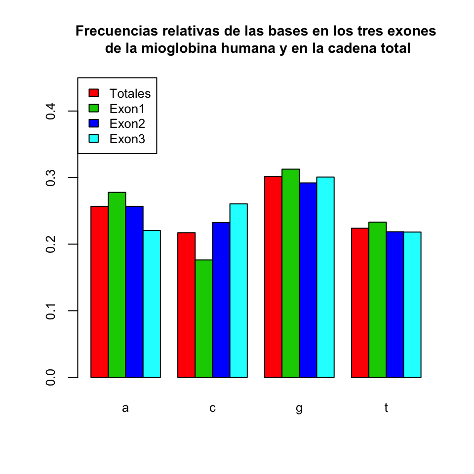

Lección 6 Bondad de ajuste
6.0.0.1 Lin 338
Una de las condiciones habituales que requerimos sobre una muestra, por ejemplo, al razonar sobre la distribución de sus estadísticos o al realizar contrastes de hipótesis, es que la población de la que la hemos extraído sigue una determinada distribución. En la Lección ?? del primer volumen comprobábamos gráficamente el ajuste de una muestra a una distribución normal mediante histogramas y dibujando las curvas de densidad muestral y de densidad de la normal. En esta lección presentamos algunas instrucciones que implementan tests de bondad de ajuste,1 técnicas cuantitativas que permiten contrastar si los datos de una muestra provienen o no de una determinada distribución de probabilidad.
Los tests de bondad de ajuste tienen el mismo significado que los contrastes de parámetros estudiados en la Lección 5. Se contrasta una hipótesis nula
contra la hipótesis alternativa
Si el resultado del test permite rechazar la hipótesis nula, es porque hemos obtenido evidencia significativa de que la muestra no proviene de una población con distribución \(X\). Pero que el test no permita rechazar la hipótesis nula no nos da evidencia de que la muestra sí que provenga de una población con distribución \(X\): simplemente nos dice que no lo podemos rechazar. Naturalmente, a efectos prácticos, estamos dispuestos a aceptar “por defecto” la hipótesis nula si no la podemos rechazar, pero en el mejor de los casos se trata de un abuso de lenguaje.
Los pasos habituales para contrastar la bondad del ajuste de una muestra a una distribución son los siguientes:
Fijar la familia de distribuciones teóricas a la que queremos ajustar los datos. Esta familia estará parametrizada por uno o varios parámetros. Recordemos algunos ejemplos usuales:
Si la familia es la Bernoulli, el parámetro es \(p\): la probabilidad poblacional de éxito.
Si la familia es la Poisson, el parámetro es \(\lambda\): la esperanza.
Si la familia es la binomial, los parámetros son \(n\) y \(p\): el tamaño de las muestras y la probabilidad de éxito, respectivamente.
Si la familia es la normal, los parámetros son \(\mu\) y \(\sigma\): la esperanza y la desviación típica, respectivamente.
Si la familia es la exponencial, el parámetro es \(\lambda\): el inverso de la esperanza.
Si la familia es la \(\chi^2\), el parámetro es el número de grados de libertad.
Si la familia es la t de Student, el parámetro es de nuevo el número de grados de libertad.
Otras familias de distribuciones tienen parámetros de localización (location), escala (scale) o forma (shape), por lo que no nos ha de extrañar si R nos pide que asignemos parámetros con estos nombres.
Si el diseño del experimento no fija sus valores, tendremos que estimar a partir de la muestra los valores de los parámetros que mejor se ajusten a nuestros datos. Esta estimación de parámetros ya la tratamos en la Lección ??
Determinar qué tipo de contraste vamos a utilizar. En esta lección veremos dos tipos básicos de contrastes generales:
El test \(\chi^2\) de Pearson. Este test es válido tanto para variables discretas como para continuas, pero solo se puede aplicar a conjuntos grandes de datos (por fijar una cota concreta, de 30 o más elementos). Además, si el espacio muestral, es decir, el conjunto de resultados posibles, es infinito, es necesario agrupar estos resultados en un número finito de clases.
El test de Kolgomorov-Smirnov. Este test sólo es válido para variables continuas, y compara la función de distribución acumulada muestral con la teórica. No requiere que la muestra sea grande, pero en cambio, en principio, no admite que los datos de la muestra se puedan repetir.2 Por desgracia, las repeticiones suelen ser habituales si la precisión de los datos es baja y la variabilidad de la población muestreada es pequeña o la muestra es grande.
Aparte, determinadas familias de distribuciones tienen sus contrastes de bondad de ajustes específicos. Este es el caso especialmente de la distribución normal, para la que explicaremos algunos tests que permiten contrastar si una muestra proviene de alguna distribución normal.
Realizar el contraste y redactar las conclusiones. Es conveniente apoyar los resultados del contraste con gráficos. En esta lección explicaremos los gráficos cuantil-cuantil, o Q-Q-plots, que sirven para visualizar el ajuste de unos datos a una distribución conocida y son una buena alternativa a los histogramas con curvas de densidad.
6.1 Pruebas gráficas: Q-Q-plots
Para comparar la distribución de una muestra con una distribución poblacional teòrica se pueden realizar diversas pruebas gráficas. En la Lección 20 de la primera parte del curso usábamos para ello histogramas con densidades estimadas y teóricas. En esta sección explicamos otro tipo de gráficos que pueden usarse con el mismo fin, los gráficos cuantil-cuantil, o, para abreviar, Q-Q-plots. Este tipo de gráficos compara los cuantiles observados de la muestra con los cuantiles teóricos de la distribución teórica.
La Figura muestra un Q-Q-plot. Cada punto corresponde a un cuantil: en concreto, hay un punto para cada \(k/n\)-cuantil, siendo \(n\) la longitud de la muestra y \(k=1,\ldots,n\). Para cada uno de estos cuantiles, el punto correspondiente tiene abscisa el cuantil de la distribución teórica (en este caso, una t de Student con 4 grados de libertad) y ordenada el cuantil de la muestra. Por lo tanto, si el ajuste es bueno, para cada \(k/n\), el cuantil muestral y el cuantil teórico han de ser parecidos, de manera que los puntos del gráfico (les llamaremos , para abreviar) han de estar cerca de la diagonal \(y=x\), que hemos añadido al gráfico. En general, se considera que un Q-Q-plot muestra un buen ajuste cuando no se observa una tendencia marcada de desviación respecto de la diagonal. Sin embargo, a menudo los Q-Q-plots son difíciles de interpretar, y es conveniente combinarlos con algún contraste de bondad de ajuste.
Figura 6.1: Q-Q-plot básico de la muestra del Ejemplo ?? contra una t de Student con 4 grados de libertad.
Hay varias maneras de producir Q-Q-plots con R. Aquí solo explicaremos una: la función qqPlot del paquete car. Su sintaxis básica es
qqPlot(x, distribution=..., parámetros, id=FALSE, ...)?donde:
`x es el vector con la muestra.
El parámetro
distributionse ha de igualar al nombre de la familia de distribuciones entre comillas, y puede tomar como valor cualquier familia de distribuciones de la que R sepa calcular la densidad y los cuantiles: esto incluye las distribuciones que hemos estudiado hasta el momento:"norm","binom","poisson","t", etc.A continuación, se tienen que entrar los parámetros de la distribución, igualando su nombre habitual (
meanpara la media,sdpara la desviación típica,dfpara los grados de libertad, etc.) a su valor. En algunos casos, si no se especifican los parámetros,qqPlottoma sus valores por defecto: por ejemplo, si queremos realizar un Q-Q-plot contra una normal y no especificamos los valores de la media y la desviación típica de la distribución teórica,qqPlotlos toma iguales a 0 y 1, respectivamente.Por defecto, el gráfico obtenido con la función
qqPlotidentifica los dos Q-Q-puntos con ordenadas más extremas. Para omitirlos, usad el parámetroid=FALSE.
Otros parámetros a tener en cuenta:
qqPlotañade por defecto una rejilla al gráfico, que podéis eliminar congrid=FALSE.qqPlotañade por defecto una línea recta que une los Q-Q-puntos correspondientes al primer y tercer cuartil: se la llama recta cuartil-cuartil. Un buen ajuste de los Q-Q-puntos a esta recta significa que la muestra se ajusta a la distribución teórica, pero posiblemente con parámetros diferentes a los especificados. Os recomendamos mantenerla, pero si queréis eliminarla por ejemplo para substituirla por la diagonal \(y=x\), podéis usar el parámetroline="none".qqPlottambién añade dos curvas discontinuas que abrazan una “región de confianza del 95%” para el Q-Q-plot. Sin entrar en detalles, esta región contendría todos los Q-Q-puntos en un 95% de las ocasiones que tomáramos una muestra de la distribución teórica del mismo tamaño que la nuestra. Por lo tanto, si todos los Q-Q-puntos caen dentro de esta franja, no hay evidencia para rechazar que la muestra provenga de la distribución teórica. Esta franja de confianza es muy útil para interpretar el Q-Q-plot, pero la podéis eliminar conenvelope=FALSE.Se pueden usar los parámetros usuales de
plotpara poner nombres a los ejes, título, modificar el estilo de los puntos, etc., y otros parámetros específicos para modificar el aspecto del gráfico. Por ejemplo,col.linessirve para especificar el color de las líneas que añade. Consultad la Ayuda de la función.
Ejemplo 6.1 Consideremos la siguiente muestra:
muestra=c(0.27,0.81,-0.73,-0.96,1.33,0.91,-1.70,0.24,-0.19,0.29,1.41,0.13,-0.06,
-0.85,-0.59,-3.62,-1.02,2.36,0.34,-0.31,0.81,-0.88,0.27,0.52,1.05,0.20,0.76,0.25,
-1.43,3.71,-0.78,0.39,-1.01,1.53,-0.72,1.22,0.56,-1.17,-0.65,-0.33,-0.07,0.31,
-0.74,0.36,-1.72,-1.21,-0.05,-1.17,0.28,1.30,0.89,1.45,0.13,-1.12,3.13,-1.21,
-0.90,-0.31,-1.05,0.89,-1.06,0.21,-0.50,-0.36,-0.29,-0.19,-1.71,0.09,0.21,0.55,
-1.42,0.19,-0.62,2.46,-0.17,-0.63,0.77,0.94,0.55,0.35,-4.47,1.71,0.07,-0.57,
-1.43,-0.85,1.06,0.82,0.19,-1.08,0.30,-0.87,0.77,1.23,-0.04,0.66,-0.87,-0.86,
-1.06,0.10)Queremos comprobar gráficamente si sigue una distribución t de Student de 4 grados de libertad. Vamos a usar la función qqPlot con sus parámetros por defecto:
library(car)
qqPlot(muestra, distribution="t", df=4, id=FALSE)Como todos los Q-Q-puntos están dentro de la región de confianza al 95%, podemos aceptar que la muestra proviene de una t de Student.
El Q-Q-plot básico de la Figura 6.1 se ha obtenido con el código siguiente:
qqPlot(muestra, distribution="t", df=4, envelope=FALSE,xlab="Cuantiles de t",
ylab="Cuantiles de la muestra",line="none", pch=20, grid=FALSE, id=FALSE)
abline(0,1, col="red", lwd=1.5)Veamos otro ejemplo.
Ejemplo 6.2 Consieremos el data frame iris que contiene información sobre medidas relacionadas con las flores de una muestra de iris de tres especies. Vamos a producir un Q-Q-plot que ilustre si las longitudes de los sépalos de las plantas iris recogidas en esta tabla de datos siguen una distribución normal. A un Q-Q-plot que compara una muestra con una distribución normal se le suele llamar, para abreviar, un normal-plot.
library(MASS)
iris.sl=iris$Sepal.Length
mu=fitdistr(iris.sl,"normal")$estimate[1]
sigma=fitdistr(iris.sl,"normal")$estimate[2]
qqPlot(iris.sl, distribution="norm", mean=mu, sd=sigma,xlab="Cuantiles de la normal",
ylab="Cuantiles de la muestra",main="Normal-plot de longitudes de sépalos de flores iris",id=FALSE)
Vemos cómo los primeros puntos salen de la región de confianza del 95%. Esto significa que los datos están más desplazados hacia la izquierda de la media que lo que se esperaría en una muestra aleatoria de una normal. El boxplot siguiente muestra este desplazamiento.
boxplot(iris.sl, main="Boxplot de longitudes de sépalos de flores iris")Interpretamos el Q-Q-plot anterior como evidencia de que estas longitudes no siguen una distribución normal. Más adelante usaremos tests de normalidad específicos para contrastar la normalidad de estos datos.
6.2 El test \(\chi^2\) de Pearson
El test \(\chi^2\) de Pearson contrasta si una muestra ha sido generada o no con una cierta distribución, cuantificando si sus valores aparecen con una frecuencia cercana a la que sería de esperar si la muestra siguiera esa distribución. Esto se lleva a cabo calculando el estadístico de contraste
\[ X^2=\sum_{i=1}^k\frac{(\mbox{frec. observada}_i-\mbox{frec. esperada}_i)^2}{\mbox{frec. esperada}_i} \] donde \(k\) es el número de clases e \(i\) es el índice de las clases, de manera que “\(\mbox{frec. observada}_i\)” y “\(\mbox{frec. esperada}_i\)” denotan, respectivamente, la frecuencia observada de la clase \(i\)-ésima y su frecuencia esperada bajo la distribución que contrastamos. Si se satisfacen una serie de condiciones, este estadístico sigue aproximadamente una ley \(\chi^2\) con un número de grados de libertad igual al número de clases menos uno y menos el número de parámetros de la distribución teórica que hayamos estimado. Las condiciones que se han de satisfacer son:
La muestra ha de ser grande, digamos que de tamaño como mínimo 30;
Si los posibles valores son infinitos, hay que agruparlos en un número finito de clases que cubran todos los posibles valores (recordad que en la primera parte del curso ya explicamos cómo agrupar variables aleatorias continuas con la función
cut);Las frecuencias esperadas de las clases en las que hemos agrupado el espacio muestral han de ser todas, o al menos una gran mayoría, mayores o iguales que 5.
La instrucción básica en R para realizar un test \(\chi^2\) es chisq.test. Su sintaxis básica es
chisq.test(x, p=..., rescale.p=..., simulate.p.value=...)donde:
xes el vector o la tabla de frecuencias absolutas observadas de las clases en la muestra.pes el vector de probabilidades teóricas de las clases para la distribución que queremos contrastar. Si no lo especificamos, se entiende que la probabilidad es la misma para todas las clases. Obviamente, estas probabilidades se tienen que especificar en el mismo orden que las frecuencias dexy, como son las probabilidades de todos los resultados posibles, en principio tienen que sumar 1; esta condición se puede relajar con el siguiente parámetro.rescale.pes un parámetro lógico que, si se iguala aTRUE, indica que los valores depno son probabilidades, sino sólo proporcionales a las probabilidades; esto hace que R tome como probabilidades teóricas los valores deppartidos por su suma, para que sumen 1. Por defecto valeFALSE, es decir, se supone que el vector que se entra comopson probabilidades y por lo tanto debe sumar 1, y si esto no pasa se genera un mensaje de error indicándolo. Igualarlo aTRUEpuede ser útil, porque nos permite especificar las probabilidades mediante las frecuencias esperadas o mediante porcentajes. Pero también es peligroso, porque si nos hemos equivocado y hemos entrado un vector enpque no corresponda a una probabilidad, R no nos avisará.simulate.p.valuees un parámetro lógico que indica a la función si debe optar por una simulación para el cálculo del p-valor del contraste. Por defecto valeFALSE, en cuyo caso este p-valor no se simula sino que se calcula mediante la distribución \(\chi^2\) correspondiente. Si se especifica comoTRUE, R realiza una serie de replicaciones aleatorias de la situación teórica: por defecto, 2000, pero su número se puede especificar mediante el parámetroB. Es decir, genera un conjunto de vectores aleatorios de frecuencias con la distribución que queremos contrastar, cada uno de suma total la dex. A continuación, calcula la proporción de estas repeticiones en las que el estadístico de contraste es mayor o igual que el obtenido parax, y éste es el p-valor que da. Cuando no se satisfacen las condiciones para que \(X^2\) siga aproximadamente una distribución \(\chi^2\), estimar el p-valor mediante simulaciones es una buena alternativa.
Veamos un primer ejemplo sencillo.
Ejemplo 6.3 Tenemos un dado, y queremos contrastar si está equilibrado o trucado. Lo hemos lanzado 40 veces y hemos obtenido los resultados siguientes:
| Resultados | Frecuencias |
|---|---|
| 1 | 8 |
| 2 | 4 |
| 3 | 6 |
| 4 | 3 |
| 5 | 7 |
| 6 | 12 |
Si el dado está equilibrado, la probabilidad de cada resultado es 1/6 y por lo tanto la frecuencia esperada de cada resultado es 40/6=6.667. Como la muestra tiene más de 30 elementos y las frecuencias esperadas son todas mayores que 5, podemos realizar de manera segura un test \(\chi^2\). Por lo tanto, entraremos estas frecuencias en un vector y le aplicaremos la función chisq.test. Como las probabilidades que contrastamos son todas iguales, no hace falta especificar el valor del parámetro p.
freqs=c(8,4,6,3,7,12)
chisq.test(freqs)##
## Chi-squared test for given probabilities
##
## data: freqs
## X-squared = 7.7, df = 5, p-value = 0.1736Observemos la estructura del resultado de un chisq.test. Nos da el valor del estadístico \(X^2\) (X-squared), los grados de libertad del mismo (df), y el p-valor del contraste (p-value). En este caso, el p-valor es 0.174, y por lo tanto no podemos rechazar que el dado esté equilibrado. Queremos remarcar que, como R no sabe si hemos estimado o no parámetros, el número de grados de libertad que da chisq.test es simplemente el número de clases menos 1. Si no hemos estimado parámetros para calcular las probabilidades teóricas, ya va bien, pero si lo hemos hecho y por lo tanto el número de grados de libertad no es el adecuado, tendremos que calcular el p-valor correcto a partir del valor del estadístico. Ya lo veremos en un ejemplo más adelante.
El resultado de un chisq.test es una list, de la que podemos extraer directamente la información que deseemos con los sufijos adecuados. En concreto, podemos obtener el valor del estadístico \(X^2\) con el sufijo $statistic, los grados de libertad con el sufijo $parameter y el p-valor con el sufijo $p.value.
chisq.test(freqs)$statistic## X-squared
## 7.7chisq.test(freqs)$parameter## df
## 5chisq.test(freqs)$p.value## [1] 0.1735627Imaginemos ahora que, en vez de lanzar el dado 40 veces, lo lanzamos 20 veces, y obtenemos los resultados siguientes:
| Resultados | Frecuencias |
|---|---|
| 1 | 4 |
| 2 | 2 |
| 3 | 3 |
| 4 | 2 |
| 5 | 3 |
| 6 | 6 |
¿Hay evidencia de que el dado esté trucado? Ahora la muestra no es grande y las frecuencias esperadas son todas 20/6=3.333, menores que 5. Por tanto, el p-valor del test \(\chi^2\) que se obtiene usando una distribución \(\chi^2_5\) no tiene por qué tener ningún significado. En una situación como ésta es cuando conviene usar el parámetro simulate.p.value. Vamos a pedir a R que simule 5000 veces el experimento de lanzar 20 veces un dado equilibrado, y que calcule como p-valor la proporción de simulaciones en las que el estadístico \(X^2\) haya dado un valor mayor o igual que el que se obtiene con nuestra muestra.
freqs2=c(4,2,3,2,3,6)
chisq.test(freqs2, simulate.p.value=TRUE, B=5000)##
## Chi-squared test for given probabilities with simulated p-value
## (based on 5000 replicates)
##
## data: freqs2
## X-squared = 3.4, df = NA, p-value = 0.6931Resulta que en un 69.8% de las simulaciones el valor de \(X^2\) ha sido mayor o igual que el de nuestra muestra, 3.4. Por lo tanto, no hay evidencia de que el dado esté trucado.
Como este p-valor se basa en simulaciones, en cada aplicación del test el p-valor puede dar resultados diferentes, pero en general la conclusión es robusta si se toma un número suficiente de simulaciones.
chisq.test(freqs2,simulate.p.value=TRUE,B=5000)$p.value## [1] 0.6876625chisq.test(freqs2,simulate.p.value=TRUE,B=5000)$p.value## [1] 0.7028594chisq.test(freqs2,simulate.p.value=TRUE,B=5000)$p.value## [1] 0.6984603Todos los p-valores son similares. Por curiosidad, ¿qué p-valor da el test \(\chi^2\) usando la distribución de \(\chi^2_5\)?
chisq.test(freqs2)$p.value## Warning in chisq.test(freqs2): Chi-squared approximation may be incorrect## [1] 0.6385699El p-valor no es muy diferente, pero fijaos en el mensaje de advertencia: para la muestra dada, la aproximación de \(X^2\) mediante una \(\chi^2_5\) puede ser incorrecta.
Ejemplo 6.4 Vamos a estudiar las frecuencias de los nucleótidos en una cadena de ADN, y contrastar si aparecen los cuatro con la misma probabilidad o no. En este caso, el espacio muestral son los cuatro nucleótidos: adenina (A), citosina (C), guanina (G) y timina (T). Identificaremos una cadena de ADN con un vector de letras a, c, g y t. Si llamamos \(p_a\), \(p_g\), \(p_c\) y \(p_t\) a las probabilidades de aparición de estas letras, el contraste que queremos realizar es
\[
\left\{\begin{array}{l}
H_0 : p_a=p_c=p_g=p_t=0.25\\
H_1: \mbox{Algunos nucleótidos son más probables que otros}
\end{array}
\right.
\] Vamos a analizar cadenas de ADN “de verdad”, extraídas de la base de datos GenBank. Para ello, utilizaremos el paquete ape, que incorpora una función read.GenBank que permite leer secuencias de genes incluidas en esta base de datos y convertirlas en vectores de letras a, c, g y t.
En la Ayuda de esta función se explica que si la aplicamos al número de acceso (accession number) de una secuencia (entrado entre comillas, ya que es una palabra) y usamos el parámetro as.character=TRUE, nos devuelve dicha secuencia como un vector de letras junto con otra información sobre la secuencia.
En este ejemplo, nos vamos a interesar por los exones que codifican las tres partes de la mioglobina humana, que es una proteína relativamente pequeña constituida por una sola cadena polipeptídica de 153 aminoácidos. Sus números de acceso son M10090.1, M14602.1 y M14603.1. El código siguiente lee estos tres exones y los guarda en tres objetos.
library(ape)
myoglobin.exon1=read.GenBank("M10090.1", as.character=TRUE)
myoglobin.exon2=read.GenBank("M14602.1", as.character=TRUE)
myoglobin.exon3=read.GenBank("M14603.1", as.character=TRUE)Consultemos cómo son los objetos donde hemos guardado estas secuencias:
str(myoglobin.exon1)## List of 1
## $ M10090.1: chr [1:2552] "g" "t" "a" "c" ...
## - attr(*, "species")= chr "Homo_sapiens"Vemos que cada uno de ellos es en realidad una list formada por un solo objeto, el vector de bases, y un atributo. Vamos a extraer los vectores, para poder trabajar con ellos. La manera más sencilla es añadiendo a cada list el sufijo [[1]]:
myoglobin.exon1[[1]][1:10]## [1] "g" "t" "a" "c" "t" "g" "t" "a" "t" "t"Así pues, vamos a quedarnos sólo con las cadenas de los tres exones.
myoglobin.exon1.nuc=myoglobin.exon1[[1]]
myoglobin.exon2.nuc=myoglobin.exon2[[1]]
myoglobin.exon3.nuc=myoglobin.exon3[[1]]Nos preguntamos si en alguna de estas tres secuencias las cuatro bases aparecen de manera equiprobable. Para responder esta pregunta, calculamos las frecuencias de las letras en cada secuencia (con table) y aplicamos el test \(\chi^2\) a los resultados. Puesto que miramos si todos los resultados aparecen con la misma probabilidad, no hace falta especificar el vector p de probabilidades.
table(myoglobin.exon1.nuc)## myoglobin.exon1.nuc
## a c g t
## 709 450 798 595chisq.test(table(myoglobin.exon1.nuc))##
## Chi-squared test for given probabilities
##
## data: table(myoglobin.exon1.nuc)
## X-squared = 106.32, df = 3, p-value < 2.2e-16El p-valor es prácticamente 0, podemos rechazar que las cuatro bases aparezcan con la misma probabilidad: las diferencias entre las frecuencias de los cuatro aminoácidos son lo suficientemente grandes como para hacer inverosímil que se hayan generado con la misma probabilidad. Veamos los otros dos exones.
table(myoglobin.exon2.nuc)## myoglobin.exon2.nuc
## a c g t
## 686 621 780 584chisq.test(table(myoglobin.exon2.nuc))##
## Chi-squared test for given probabilities
##
## data: table(myoglobin.exon2.nuc)
## X-squared = 33.145, df = 3, p-value = 3.001e-07table(myoglobin.exon3.nuc)## myoglobin.exon3.nuc
## a c g t
## 323 382 441 320chisq.test(table(myoglobin.exon3.nuc))##
## Chi-squared test for given probabilities
##
## data: table(myoglobin.exon3.nuc)
## X-squared = 26.862, df = 3, p-value = 6.292e-06En los tres contrastes tenemos que rechazar la hipótesis nula: en ninguna de las tres cadenas parece que las bases aparezcan con la misma probabilidad.
Ejemplo 6.5 Siguiendo con el ejemplo anterior, vamos a contrastar ahora si las bases del exón 1 siguen una distribución en la que A y G aparecen un 50% de veces más que C y T. Usaremos p=c(1.5,1,1.5,1) para especificar estas proporciones.
chisq.test(table(myoglobin.exon1.nuc),p=c(1.5,1,1.5,1))## Error in chisq.test(table(myoglobin.exon1.nuc), p = c(1.5, 1, 1.5, 1)): probabilities must sum to 1.¡Vaya! Nos habíamos olvidado de especificar rescale.p=TRUE, para poder entrar como p un vector proporcional a las probabilidades.
chisq.test(table(myoglobin.exon1.nuc),p=c(1.5,1,1.5,1),rescale.p=TRUE)$p.value## [1] 6.720275e-06De nuevo, tenemos que rechazar la hipótesis nula.
Ejemplo 6.6 Vamos a realizar otro experimento con los datos de los ejemplos anteriores. Construiremos una cadena formada por los tres exones, y vamos a comparar si la frecuencia de bases en cada exón es similar a la de la cadena total, que hará de distribución teórica.
Definimos la cadena completa:
myoglobin.todos.nuc=c(myoglobin.exon1.nuc,myoglobin.exon2.nuc,
myoglobin.exon3.nuc)Calculemos la tabla de frecuencias relativas de las bases en la cadena completa
probs.tot=prop.table(table(myoglobin.todos.nuc)) Vamos a usar esta tabla como parámetro p de la función chisq.test:
chisq.test(table(myoglobin.exon1.nuc),p=probs.tot)$p.value## [1] 9.784579e-06chisq.test(table(myoglobin.exon2.nuc),p=probs.tot)$p.value## [1] 0.2533979chisq.test(table(myoglobin.exon3.nuc),p=probs.tot)$p.value## [1] 0.0001324974Los exones 1 y 3 dan unos p-valores muy pequeños, y por lo tanto podemos rechazar que en estos exones las bases aparezcan con la misma probabilidad que en la cadena total. En cambio, el exón 2 da un \(p\)-valor de 0.253, por lo que para este exón no podemos rechazar la hipótesis nula y podemos concluir que las bases aparecen en él con la misma probabilidad que en la cadena total. Podemos ilustrar estas conclusiones gráficamente mediante un diagrama de barras conjunto.
barplot(rbind(prop.table(table(myoglobin.todos.nuc)),
prop.table(table(myoglobin.exon1.nuc)),
prop.table(table(myoglobin.exon2.nuc)),
prop.table(table(myoglobin.exon3.nuc))),
beside=TRUE, legend=c("Totales","Exon1","Exon2","Exon3"),
ylim=c(0,0.45),main="Frecuencias relativas de las bases en los tres exones\n de la mioglobina humana y en la cadena total.")
El gráfico que obtenemos confirma que las frecuencias relativas de las bases en el exón 2 se ajustan bastante a las globales.